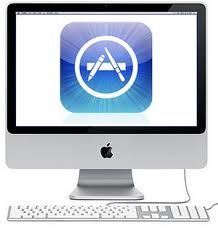

Delivering your application to the Mac App Store
This page describes the process of delivering your application to the Mac App Store.

First, you need to make sure you have the correct provisioning profiles installed in your keychain: the "3rd Party Mac Developer Application" and “3rd Party Mac Developer Installer” profiles. See Apple’s developer documentation on Maintaining Your Signing Identities and Certificates to learn how to do this.
Go to Edit > Project Settings and select the Player category. Select the Standalone target, expand the Other Settings section and navigate to Mac App Store Options.
Unity automatically applies these settings to your app’s info.plist file as CF keys (see Apple’s developer documentation on Core Foundation Keys to learn more).

| Property | Function |
|---|---|
| Bundle Identifier | Enter the Bundle Identifier of your iTunesConnect App. This appears as CFBundleIdentifier in the associated info.plist file.See the Apple developer documentation on CFBundleIdentifier to learn more. |
| Build | Enter the build number for this version of your app. This appears as CFBundleVersion in the associated info.plist file.See the Apple developer documentation on CFBundleVersion to learn more. |
| Category | Enter the string corresponding to the app’s type. The App Store uses this string to determine the appropriate categorization for the app. By default, this is set to the game category, public.app-category.games. See the Apple developer documentation on LSApplicationCategoryType to see the list of category types available. |
| Mac App Store Validation | Enable this to ensure that your app only runs when it contains a valid receipt from the Mac App Store. This prevents people from running the game on a different device to the one it was purchased on. Only disable this setting if you have implemented your own receipt validation. |
Enable the Mac App Store Validation setting, then build your app (File > Build Settings… > Build).
Next, you need to create a GAMENAME.entitlements file and save it in any location. The easiest way to do this is to create an empty Mac app. To do this, open Xcode, create a new project with a macOS template, go to the Capabilities bar and enable App Sandbox. This automatically generates a basic .entitlements file.
<?xml version="1.0" encoding="UTF-8"?>
<!DOCTYPE plist PUBLIC "-//Apple//DTD PLIST 1.0//EN" "http://www.apple.com/DTDs/PropertyList-1.0.dtd">
<plist version="1.0">
<dict>
<key>com.apple.security.app-sandbox</key> <true/>
</dict>
</plist>
Open the *info.plist *file in Xcode (or any text editor), and add the following keys:
<key>LSApplicationCategoryType</key>
<string>{VALID APP CATEGORY, e.g.: public.app-category.kids-games }</string>
<key>CFBundleSignature</key>
<string>{4 LETTER CREATOR CODE, e. g.: GMAD }</string>
If you’re using Xcode 8.0+, you also need to add these fields to the info.plist file:
<key>CFBundleSupportedPlatforms</key>
<array>
<string>MacOSX</string>
</array>
Next, fix read permissions on all the content in the .app. To do this, type the following into the macOS Terminal:
chmod -R a+xr "/path/to/GAMENAME.app"
Sign the .App with the .entitlements you created earlier. To do this, type the following into the macOS Terminal:
codesign -f --deep -s '3rd Party Mac Developer Application: DEVELOPER NAME' --entitlements "GAMENAME.entitlements" "/AppPath/GAMENAME.app"
Build the installer/pkg. To do this, type the following into the macOS Terminal:
productbuild --component GAMENAME.app /Applications --sign "3rd Party Mac Developer Installer: DEVELOPER NAME" GAMENAME.pkg
Finally, use the Xcode ApplicationLoader to submit your app.
Custom Icons
By default, Unity downsizes the icon image that you specified on the Icon panel of the Player settings (open Edit > Project Settings, then select the Player category) to generate an .icns file. This defines how your app’s icon appears in the macOS Finder and in the OS dock. However, you can replace it with a custom icon set if you want to.
- Make a folder and name it UnityPlayer.iconset (or whichever name is set in your info.plist’s
CFBundleIconFile/Icon Filefield) and place the following image names inside. Note that this folder must have the .iconset extension.
icon_16x16.png
icon_16x16@2x.png
icon_32x32.png
icon_32x32@2x.png
icon_128x128.png
icon_128x128@2x.png
icon_256x256.png
icon_256x256@2x.png
icon_512x512.png
icon_512x512@2x.png
Make sure that the @2x.png images are double the size stated in the file name. For example, the image 512x512@2x.png contains an image that is 1024x1024. From the macOS Terminal, navigate to the directory where the .iconset directory is located, and enter the following command:
iconutil -c icns UnityPlayer.iconset
Finally, right-click the .app file and, select Show Contents, and replace the iconset.icns with the one you created earlier.